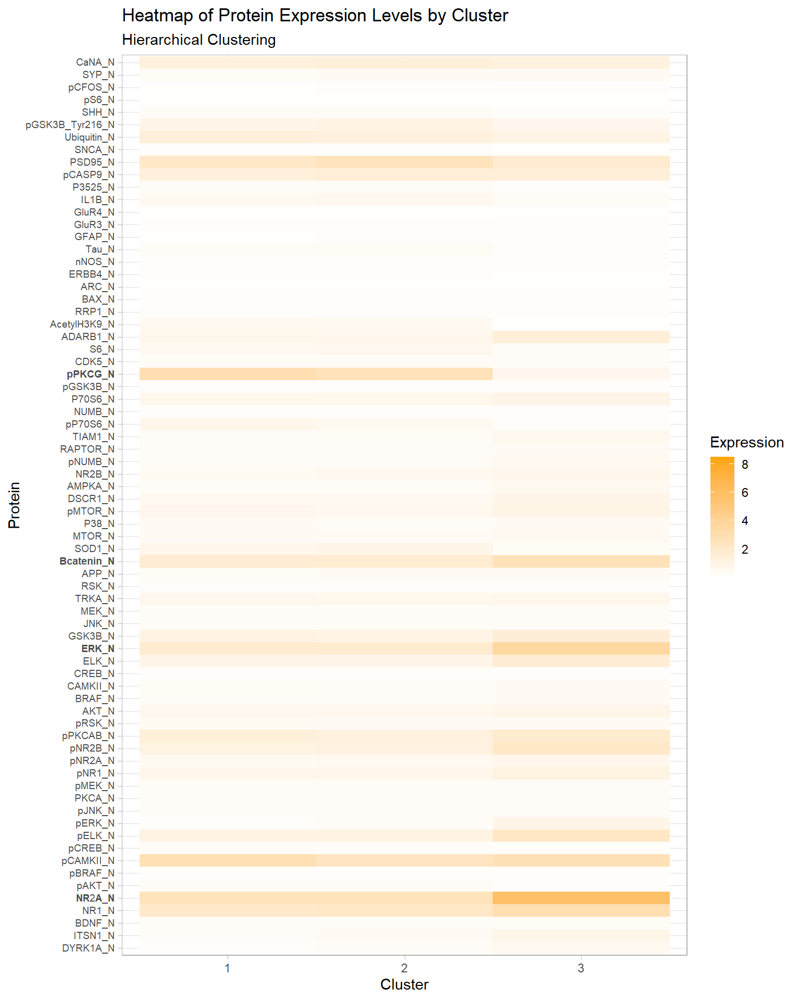
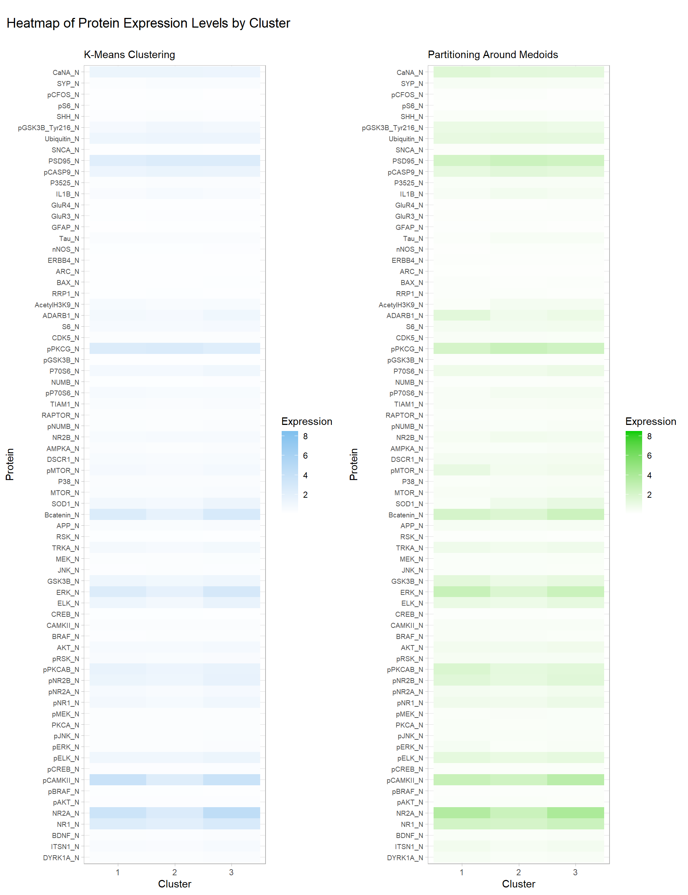
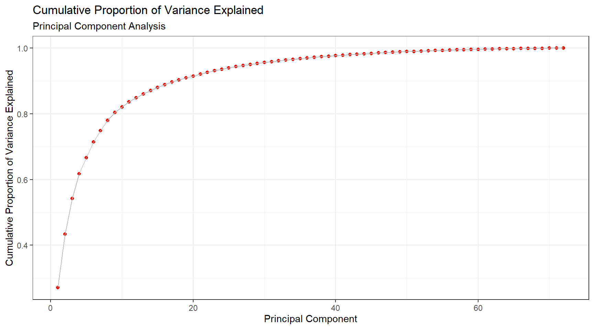
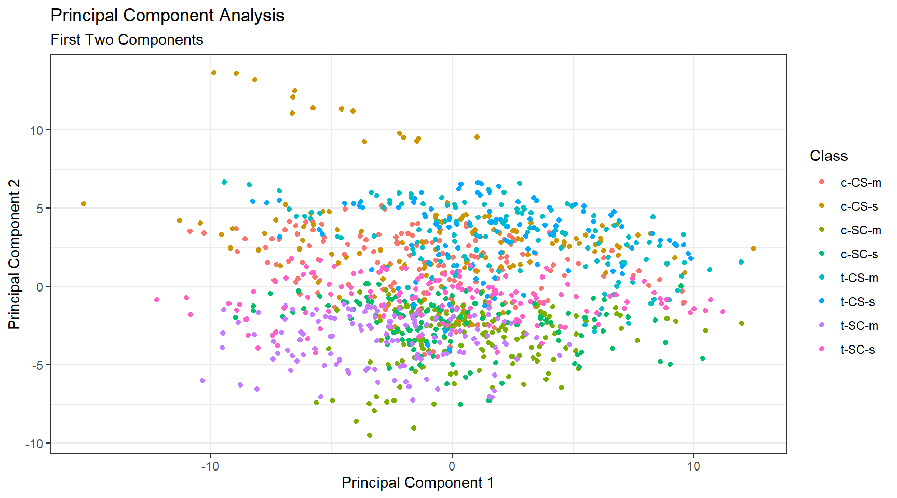
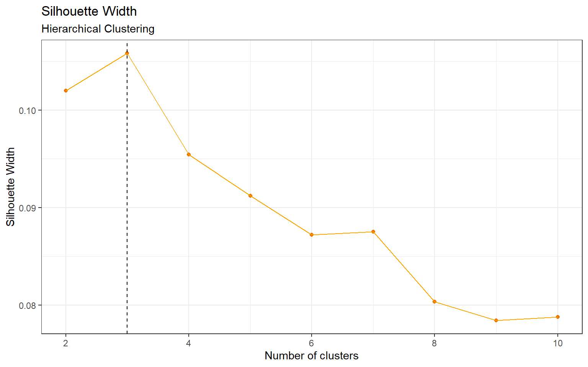
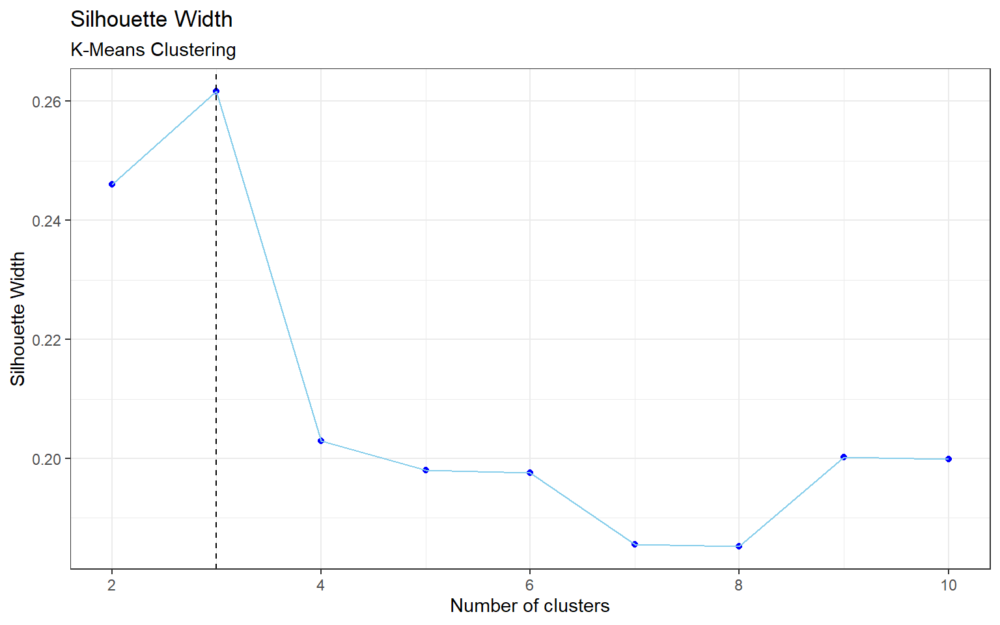
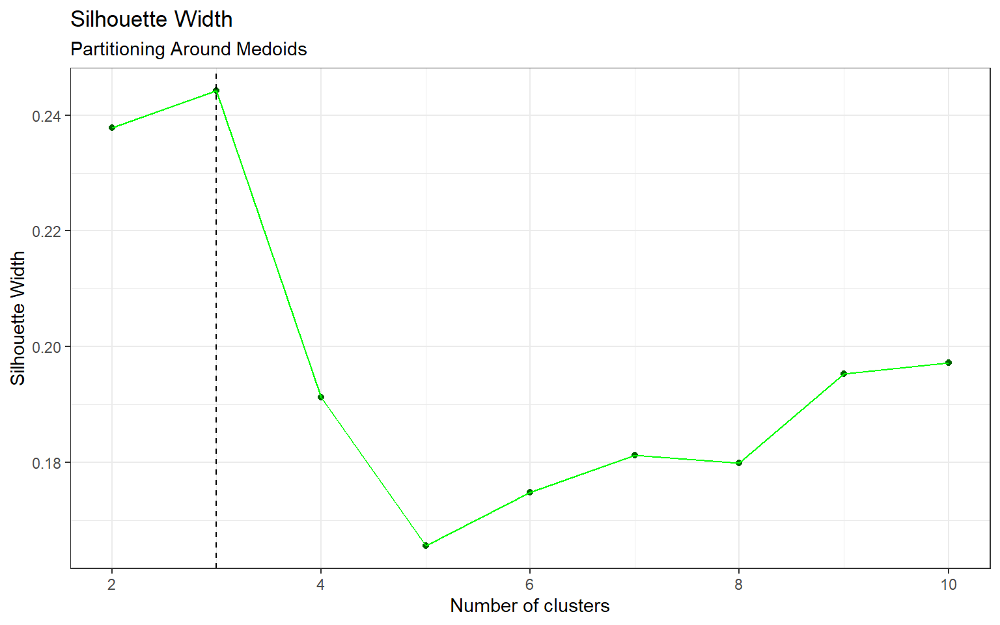

The mice protein expression data set was obtained from the UCI Machine Learning Repository and used in the following analysis to identify potential clusters and patterns in the data. This may provide some insights in using unsupervised learning methods on high dimensional data.
The main objective of this analysis is to use unsupervised learning methods to create distinct clusters, determine whether any clusters are associated with a particular genotype, behaviour and/or treatment, and to identify potential protein expression patterns in the clusters. The clustering methods used in the analysis include hierarchical clustering, k-means clustering, and partitioning around medoids. A dimension reduction method called principal component analysis is also used in an attempt to identify patterns in the data.
In the Methods section, the unsupervised learning methods are discussed. In the results section, we look at the clusters formed by each method, as well as the protein expression patterns in these clusters. The methods and results are further interpreted in the Discussion section, along with how to deal with correlated data.
The data set contains 1080 measurements per protein for 77 proteins, which were recorded from a sample of 72 mice. This works out to 15 measurements of each protein per mouse. There are additional variables such as the Genotype, Treatment, Behavior and class, where class combines the other three variables into one. In Appendix Table 6 there is a description of the 8 mice classes and how they relate to the other three variables.
There was a considerable amount of missing values in 5 proteins, ranging between 17% to 25% missing values so these 5 proteins were removed from the data. The remaining 72 proteins each had less than 2% missing values so these values were imputed with mean imputation.
The average silhouette width was used for selecting the optimal number of clusters for hierarchical clustering, k-means clustering, and partitioning around medoids. Silhouette width is simply a measure of average dissimilarity, which allows us to identify how different the clusters are from one another. The values range from -1 to 1, where a higher width indicates better clustering results. Principal component analysis is a different type of unsupervised learning method that does not involve clustering so there are no parameters (e.g. number of clusters) that require optimization. The four methods are explained in the following sections.
The most common form of hierarchical clustering is known as agglomerative hierarchical clustering. The data points start off in their own cluster, and the points with the lowest dissimilarity are fused to form a new cluster. This process continues until all clusters are merged into one. The dissimilarity between clusters is defined by the linkage type. For a balanced dendrogram, we chose complete linkage which uses the maximal inter-cluster dissimilarity. Hierarchical clustering can be represented by a dendrogram, which is a binary tree-like structure in which the leaves represent the data points. The data points are formed into larger clusters as we hierarchically move up the tree. The advantage of this method is that the number of clusters can be chosen after the results are produced. One can simply cut the tree at a certain level to select the number of clusters. In addition, if the features have large variability then scaling is required for optimal results.
The goal of k-means clustering is to find a set of \(k\) groups for which the data points within each cluster are as close to one another as possible, with closeness referring to the Euclidean distance. The k-means algorithm starts off by randomly assigning the data points into \(k\) clusters, and determining the centroid (or mean) of each cluster. Next, the clusters are updated as the points are assigned to the cluster with the closest centroid. This process continues until there are no more changes. Unlike hierarchical clustering, k-means clustering requires \(k\) to be specified beforehand.
Partitioning around medoids (PAM) is similar to k-means clustering with some subtle differences. PAM uses medoids instead of centroids. Medoids can be thought of as the median of the cluster which is an actual data point, whereas centroids do not need to be a point. In addition, PAM uses dissimilarity for clustering whereas k-means requires a distance measure. The number of clusters is specified prior to clustering.
Principal component analysis (PCA) is a dimension reduction and data compression method which projects higher dimensional data into a lower dimensional space. This method allows us to identify trends in the data that were not visible previously. Principal components are essentially a linear combinations of the features, where each component can be used to explain the variance in the data. The first principal component is the linear combination with the largest variance, the second principal component is the combination with the second highest variance, and so on. Each principal component is perpendicular to one another, which means that it can become difficult to visualize beyond two or three components. Due to the way that the principal components are calculated, it is important to scale the data beforehand.
According to Appendix Figure 5 the optimal number of clusters is 3. In Table 1, cluster 3 contains one distinct class c-CS-s. This class represents control mice that were stimulated to learn and injected with saline.
In Figure 1, we see that the pPKCG protein has relatively high expression levels in clusters 1 and 2, and a low expression level in cluster 3. Conversely, the Bcatenin, ERK, and NR2A proteins have high expression levels in cluster 3 and lower expression levels in 1 and 2. These four proteins along with several others may have played a key role in creating the distinct cluster.
| Cluster | c-CS-m | c-CS-s | c-SC-m | c-SC-s | t-CS-m | t-CS-s | t-SC-m | t-SC-s |
|---|---|---|---|---|---|---|---|---|
| 1 | 63 | 58 | 48 | 51 | 42 | 33 | 103 | 90 |
| 2 | 87 | 57 | 102 | 84 | 93 | 72 | 32 | 45 |
| 3 | 0 | 20 | 0 | 0 | 0 | 0 | 0 | 0 |
Figure 1: Heatmap of Protein Expression Levels by Cluster, Hierarchical Clustering
The optimal number of clusters for k-means is also 3 (by Appendix Figure 6). The results are in Table 2, and we can see that there are no clusters that are associated with one particular class like in hierarchical clustering. However, Table 3 shows that in cluster 1 there are a total of 61 observations for mice that were stimulated to learn (C/S) versus 271 observations that were not stimulated to learn (S/C). Consequently, cluster 3 has an imbalance in the opposite direction, with 221 C/S observations, and 61 S/C observations.
| Cluster | c-CS-m | c-CS-s | c-SC-m | c-SC-s | t-CS-m | t-CS-s | t-SC-m | t-SC-s |
|---|---|---|---|---|---|---|---|---|
| 1 | 13 | 9 | 101 | 21 | 30 | 9 | 85 | 64 |
| 2 | 55 | 55 | 49 | 71 | 72 | 61 | 36 | 67 |
| 3 | 82 | 71 | 0 | 43 | 33 | 35 | 14 | 4 |
| Cluster | C/S | S/C |
|---|---|---|
| 1 | 61 | 271 |
| 2 | 243 | 223 |
| 3 | 221 | 61 |
Similar to k-means clustering, the optimal number of clusters for PAM is also 3 (by Appendix Figure 7). Interestingly, Table 4 shows an imbalance between the two behaviours (C/S: stimulated to learn, S/C: not stimulated to learn) in clusters 1 and 3. Table 5 provides the numbers: in cluster 1, there are 265 observations belonging to C/S, and just 45 for the S/C behaviour. Cluster 3 shows the opposite imbalance, with 85 in C/S and 329 in S/C. The clusters formed by PAM are quite similar to the k-means clusters. Additionally, their heatmaps for protein expression levels by clusters in Figure 2 are almost identical with some very minor differences. One concerning detail is that there are no visible differences between clusters 1 and 3 for both methods, so it is possible that the imbalance between the two mice behaviours in these clusters may have been due to random chance.
| Cluster | c-CS-m | c-CS-s | c-SC-m | c-SC-s | t-CS-m | t-CS-s | t-SC-m | t-SC-s |
|---|---|---|---|---|---|---|---|---|
| 1 | 84 | 80 | 0 | 42 | 49 | 52 | 3 | 0 |
| 2 | 43 | 37 | 34 | 57 | 51 | 44 | 29 | 61 |
| 3 | 23 | 18 | 116 | 36 | 35 | 9 | 103 | 74 |
| Cluster | C/S | S/C |
|---|---|---|
| 1 | 265 | 45 |
| 2 | 175 | 181 |
| 3 | 85 | 329 |
Figure 2: Heatmap of Protein Expression Levels by Cluster, K-Means & PAM
The cumulative proportion of variance explained is shown in Figure 3. While the first two components only explain 43% of the variance, 80% of variance explained is achieved at the ninth principal component. This result is quite good for a data set containing 77 proteins. Figure 4 visualizes the classes with just the first two principal components which is not ideal, however it is important to note that principal components do not need to be two-dimensional.
Figure 3: Principal Component Analysis, Cumulative Proportion of Variance Explained
Figure 4: Principal Component Analysis, first two components
Overall with unsupervised learning it can be really difficult to achieve meaningful results as there is no universal method to approaching the problem. In this analysis we used hierarchical clustering, k-means clustering and partitioning around medoids with 3 clusters each, and we did see some distinct clusters despite the poor silhouette widths. Between the three clustering methods, hierarchical clustering was able to distinguish one unique mice class in its own cluster, which gives this method the edge over k-means clustering and partitioning around medoids. Additionally, there was an attempt to reduce dimensionality via principal component analysis, and the results were satisfactory.
In the analysis we assumed that the samples were independent, when they are in fact not since multiple measurements are taken from each mouse which is known as repeated measures data. If intra-subject correlation is ignored, the clustering algorithms may weigh the correlated values more heavily which can lead to poor results. A simple method to this problem is to take the average over the repeated measurements, but this is not the best method because we are working with high dimensional data. Another possible method to deal with clustering repeated measures data is to fit a Gaussian Mixture Model (GMM) to each subject, then create a parameter space using the GMM parameters (e.g. mean, variance), and finally perform clustering within the parameter space.
| Class | Genotype | Behaviour | Treatment | Count |
|---|---|---|---|---|
| c-CS-s | control | stimulated to learn | saline | 9 |
| c-CS-m | control | stimulated to learn | memantine | 10 |
| c-SC-s | control | not stimulated to learn | saline | 9 |
| c-SC-m | control | not stimulated to learn | memantine | 10 |
| t-CS-s | trisomy | stimulated to learn | saline | 7 |
| t-CS-m | trisomy | stimulated to learn | memantine | 9 |
| t-SC-s | trisomy | not stimulated to learn | saline | 9 |
| t-SC-m | trisomy | not stimulated to learn | memantine | 9 |
Figure 5: Silhouette Width, Hierarchical Clustering
Figure 6: Silhouette Width, K-Means Clustering
Figure 7: Silhouette Width, Partitioning Around Medoids
James, G., Witten, D., Hastie, T., & Tibshirani, R. (2013). An introduction to statistical learning.
# Load packages and set theme
library(tidyverse)
library(cluster)
library(tableone)
library(kableExtra)
library(reshape2)
library(cowplot)
theme_set(theme_bw())
# Load data, take a look at its variables and summary
mouse <- read.csv("./files/Data_Cortex_Nuclear.csv")
glimpse(mouse)
summary(mouse)
# There are 5 variables with > 16% missingness. The rest of the variables have < 2% missingness.
tab <- CreateTableOne(data = mouse %>% select(-MouseID))
summary(tab)
# Remove these 5 variables and use mean imputation on remaining vars
data <- mouse %>%
discard(~sum(is.na(.))/length(.)* 100 >=15) %>%
mutate_all(~ifelse(is.na(.), mean(., na.rm = T), .)) %>%
# 1 negative value, replace that with mean imputation.
mutate_at("RRP1_N", ~ifelse(. < 0 , mean(., na.rm = T), .)) %>%
# Convert characters to factors
mutate_if(is.character, as.factor)
summary(data)
# Only use numeric variables for clustering
x <- data %>% select_if(is.numeric)
### Analysis ###
# Scale data for hierarchical clustering
x.scale <- scale(x)
# Complete linkage
hc.complete <- hclust(dist(x.scale), method = "complete")
# Optimal k is 3 (Appendix)
cut.tree.com <- cutree(hc.complete, k = 3)
hc.data <- data %>%
mutate(Cluster = as.factor(cut.tree.com))
hc.tab <- hc.data %>%
select(Cluster,class) %>%
table()
# Cluster 3 is able to distinguish one class quite well
cbind(Cluster = 1:3, hc.tab) %>%
kbl(caption = "\\label{tab:tabHC}Hierarchical Clustering with Complete Linkage, Breakdown by Class") %>%
add_header_above(c(" " = 1, "Class" = 8)) %>%
kable_styling(latex_options = "hold_position")
# Creating the heatmap for hierarchical clustering
# Reshape the data from wide to long
hc.long <- melt(hc.data,
variable.name = "Protein",
value.name = "Expression",
id.vars = c("MouseID", "Genotype", "Treatment", "Behavior",
"class", "Cluster"))
hc.long %>%
ggplot(aes(x = Cluster, y = Protein, fill = Expression)) +
geom_tile() +
scale_fill_gradient2(high = "orange") +
theme_light() +
theme(axis.text.y = element_text(size = 7)) +
scale_y_discrete(labels=c("pPKCG_N"=expression(bold(pPKCG_N)),
"Bcatenin_N"=expression(bold(Bcatenin_N)),
"ERK_N"=expression(bold(ERK_N)),
"NR2A_N"=expression(bold(NR2A_N)),
parse=TRUE)) +
labs(title = "Heatmap of Protein Expression Levels by Cluster",
subtitle = "Hierarchical Clustering")
# Set seed for reproducibility due to randomness of k-means
set.seed(8)
# Optimal k is 3 (Appendix)
km.res <- kmeans(x, centers = 3)
km.data <- data %>%
mutate(Cluster = as.factor(km.res$cluster))
km.tab <- km.data %>%
select(Cluster,class) %>%
table()
# No distinct classes, but behaviour looks imbalanced
cbind(Cluster = 1:3, km.tab) %>%
kbl(caption = "\\label{tab:tabKM}K-Means Clustering, Breakdown by Class") %>%
add_header_above(c(" " = 1, "Class" = 8)) %>%
kable_styling(latex_options = "hold_position")
km.behav <- km.data %>%
select(Cluster,Behavior) %>%
table()
# Breakdown by behaviour
cbind(Cluster = 1:3, km.behav) %>%
kbl(caption = "\\label{tab:tabKMbehav}K-Means Clustering, Breakdown by Behaviour") %>%
add_header_above(c(" " = 1, "Behaviour" = 2)) %>%
kable_styling(latex_options = "hold_position")
# Set seed again due to randomness of PAM, and new code chunk
set.seed(8)
# Optimal k is 3 (Appendix)
pam.res <- pam(x, k = 3)
pam.data <- data %>%
mutate(Cluster = as.factor(pam.res$clustering))
pam.tab <- pam.data %>%
select(Cluster,class) %>%
table()
# No distinct classes, but behaviour looks imbalanced
cbind(Cluster = 1:3, pam.tab) %>%
kbl(caption = "\\label{tab:tabPAM}Partitioning Around Medoids, Breakdown by Class") %>%
add_header_above(c(" " = 1, "Class" = 8)) %>%
kable_styling(latex_options = "hold_position")
pam.behav <- pam.data %>%
select(Cluster,Behavior) %>%
table()
# Breakdown by behaviour
cbind(Cluster = 1:3, pam.behav) %>%
kbl(caption = "\\label{tab:tabPAMbehav}Partitioning Around Medoids, Breakdown by Behaviour") %>%
add_header_above(c(" " = 1, "Behaviour" = 2)) %>%
kable_styling(latex_options = "hold_position")
# Creating the heatmap for both k-means and PAM
# Reshape the data from wide to long
km.long <- melt(km.data, variable.name = "Protein", value.name = "Expression",
id.vars = c("MouseID", "Genotype", "Treatment",
"Behavior", "class", "Cluster"))
km.plot <- km.long %>%
ggplot(aes(x = Cluster, y = Protein, fill = Expression)) +
geom_tile() +
scale_fill_gradient2(high = "skyblue2") +
theme_light() +
theme(axis.text.y = element_text(size = 7)) +
labs(subtitle = "K-Means Clustering")
# Reshape the data from wide to long
pam.long <- melt(pam.data, variable.name = "Protein", value.name = "Expression",
id.vars = c("MouseID", "Genotype", "Treatment",
"Behavior", "class", "Cluster"))
pam.plot <- pam.long %>%
ggplot(aes(x = Cluster, y = Protein, fill = Expression)) +
geom_tile() +
scale_fill_gradient2(high = "green3") +
theme_light() +
theme(axis.text.y = element_text(size = 7)) +
labs(subtitle = "Partitioning Around Medoids")
title <- ggdraw() +
draw_label("Heatmap of Protein Expression Levels by Cluster",
x = 0,
hjust = 0) +
theme(
# add margin on the left of the drawing canvas,
# so title is aligned with left edge of first plot
plot.margin = margin(0, 0, 0, 7))
plot_grid(title,
plot_grid(km.plot, pam.plot),
ncol = 1,
rel_heights = c(1, 19))
# Apply PCA to the mouse data
pr.out <- prcomp(x, scale = T)
# Calculate the variance explained by the PC's
pr.var <- pr.out$sdev^2
pve <- pr.var/sum(pr.var)
# the first 9 PC's explain about 80% of the data variation
data.frame(pc = 1:length(pve), cs = cumsum(pve)) %>%
ggplot(aes(pc, cs)) +
geom_point(col = "red") +
geom_line(col = "grey") +
labs(title = "Cumulative Proportion of Variance Explained",
subtitle = "Principal Component Analysis",
x = "Principal Component",
y = "Cumulative Proportion of Variance Explained")
# 2D visualization of first 2 PC's, not that useful in this instance but looks cool
data.frame(pr.out$x[,1:2], Class = data$class) %>%
ggplot(aes(PC1, PC2, color = Class)) +
geom_point() +
labs(title = "Principal Component Analysis",
subtitle = "First Two Components",
x = "Principal Component 1",
y = "Principal Component 2")
# Table for mice classes
Class <- c("c-CS-s", "c-CS-m", "c-SC-s", "c-SC-m",
"t-CS-s", "t-CS-m", "t-SC-s", "t-SC-m")
Genotype <- c("control", "control", "control", "control",
"trisomy", "trisomy", "trisomy", "trisomy")
Behaviour <- c("stimulated to learn", "stimulated to learn",
"not stimulated to learn", "not stimulated to learn",
"stimulated to learn", "stimulated to learn",
"not stimulated to learn", "not stimulated to learn")
Treatment <- c("saline", "memantine", "saline", "memantine",
"saline", "memantine", "saline", "memantine")
Count <- c(9, 10, 9, 10, 7, 9, 9, 9)
data.frame(Class, Genotype, Behaviour, Treatment, Count) %>%
kbl(caption = "\\label{tab:tabmice}Mice Classes",
align = "l") %>%
kable_styling(latex_options = "hold_position")
## Hierarchical clustering silhouette width
hc.sil.width <- c()
for(i in 1:9){
cut.tree <- cutree(hc.complete, k = i+1)
hc.sil.width[i] <- summary(silhouette(cut.tree, dist(x.scale)))$avg.width
}
# Plot silhouette width (higher is better)
data.frame(k = 2:10, hc.sil.width) %>%
ggplot(aes(k, hc.sil.width)) +
geom_point(col = "darkorange2") +
geom_line(col = "orange") +
geom_vline(xintercept = which.max(hc.sil.width)+1, linetype = "dashed") +
labs(title = "Silhouette Width",
subtitle = "Hierarchical Clustering",
x = "Number of clusters",
y = "Silhouette Width")
## K-means Silhouette Width
set.seed(8)
# Find optimal k
km.sil.width <- numeric(9)
for(i in 1:9){
km.fit <- kmeans(x, centers = i+1)
km.sil.width[i] <- summary(silhouette(km.fit$cluster,dist(x)))$avg.width
}
# Plot silhouette width
data.frame(k = 2:10, km.sil.width) %>%
ggplot(aes(k, km.sil.width)) +
geom_point(col = "blue") +
geom_line(col = "skyblue") +
geom_vline(xintercept = which.max(km.sil.width)+1, linetype = "dashed") +
labs(title = "Silhouette Width",
subtitle = "K-Means Clustering",
x = "Number of clusters",
y = "Silhouette Width")
## PAM Silhouette Width
set.seed(8)
# Find optimal k
pam.sil.width <- numeric(9)
for(i in 1:9){
pam.fit <- pam(x, k = i+1)
pam.sil.width[i] <- pam.fit$silinfo$avg.width
}
# Plot silhouette width
data.frame(k = 2:10, pam.sil.width) %>%
ggplot(aes(k, pam.sil.width)) +
geom_point(col = "darkgreen") +
geom_line(col = "green") +
geom_vline(xintercept = which.max(pam.sil.width)+1, linetype = "dashed") +
labs(title = "Silhouette Width",
subtitle = "Partitioning Around Medoids",
x = "Number of clusters",
y = "Silhouette Width")